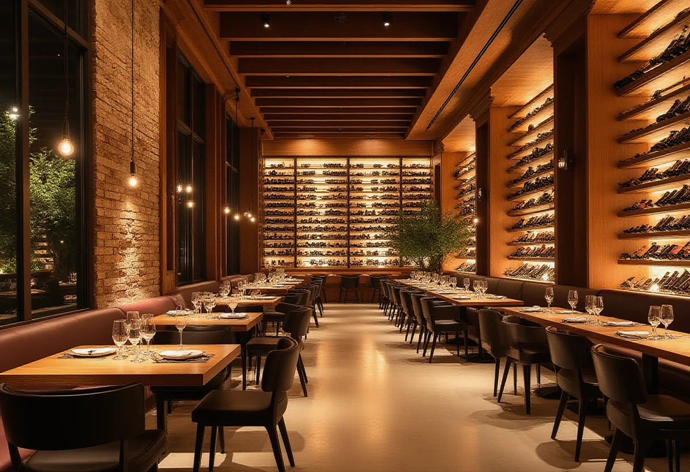

실제 방문자들의 솔직한 목소리

광고가 아닌, 실제 경험에서 우러나온 평가만이 가치 있습니다.
- “소문과 진실은 다릅니다.” 강남 클럽의 화려함 뒤에 숨겨진 현실적인 경험을 공유합니다.
- “모든 방문자는 다릅니다.” 초보자, 단체 방문객, 혼자 온 외국인 등 다양한 유형의 실제 케이스를 분석합니다.
- “신뢰는 투명성에서 시작됩니다.” 가격, 대기 시간, 음질, 직원 태도 등 구체적인 데이터를 제공합니다.
- “이후기 페이지는 변경되지 않습니다.” 편집되지 않은, 원본 그대로의 사용자 경험을 기록합니다.
실제 케이스 스터디
다양한 배경과 목적으로 방문한 실제 사례들을 통해
자신에게 맞는 클럽을 선택할 수 있도록 분석했습니다.
외국인 관광객 A씨 (미국)
"한국의 클럽 문화를 체험하고 싶었어요. 영어 메뉴와 직원이 있었지만, 여전히 현지인들의 에너지가 대단했습니다. 입장 조건이 명확하다는 점이 좋았고, 비용은 예상보다 높았지만 전반적인 경험은 만족스러웠습니다."
핵심 평가: 언어 장벽이 일부 존재하나, 접근성은 양호하며 현지 분위기 체험에 적합.
초보자 B씨 (20대 대학생)
"처음이라 긴장했는데, 온라인 정보와 실제가 다릅니다. 입장 줄이 생각보다 길었고, 내부는 소음이 심해 대화가 거의 불가능했어요. 그래도 분위기는 확실히 스트레스 해소에 좋았습니다. 다음엔 친구들과 단체로 올 예정입니다."
핵심 평가: 기대와 현실의 차이를 인지해야 하며, 단체 방문 시 보다 나은 경험 가능.
상시 이용객 C씨 (30대 직장인)
"1년에 3-4번 정도 방문합니다. 특정 클럽의 VIP 시스템과 룸 서비스는 비즈니스 접대에도 활용할 수 있을 정도로 체계적이에요. 다만, 일반석의 경험은 프리미엄 고객과 확연히 다르다는 점을 인지해야 합니다."
핵심 평가: 가격대별 경험 격차가 크며, 명확한 목적과 예산 설정이 필요.
혼자 방문한 D씨 (해외 거주 한국인)
"혼자 가면 외롭지 않을까 걱정했는데, 바 테이블이 있어서 자연스럽게 대화가 이어졌습니다. 다만, 도어맨의 눈치가 있을 수 있어요. 자신감 있게 행동하니 오히려 좋은 경험이 됐습니다."
핵심 평가: 혼자 방문 시 적극적인 태도가 중요하며, 바 좌석 활용을 추천.
비즈니스 그룹 E팀 (5명)
"팀 빌딩을 위해 왔는데, 일반석은 비즈니스 대화에 적합하지 않습니다. 사전에 룸이나 VIP 테이블을 예약하는 것이 필수적이었어요. 비용은 높았지만, 프라이버시와 서비스는 만족스러웠습니다."
핵심 평가: 비즈니스 목적의 방문은 사전 예약과 추가 비용을 반드시 고려.
2차 방문 F씨 (첫 방문 후 재방문)
"첫 방문 후 아쉬움이 남아 재방문했습니다. 이번엔 사전 정보를 충분히 숙지하고 갔더니, 대기 시간을 줄이고 원하는 위치에서 즐길 수 있었어요. 강남 클럽은 '알면 더 즐겁다'는 사실을 깨달았습니다."
핵심 평가: 사전 정보 습득이 경험의 질을 크게 좌우하며, 두 번째 방문 이후 만족도 상승.
신뢰를 구축하는 투명한 정보
검증된 리뷰
본문에 기재된 모든 후기는 실제 방문자의 동의를 받아 공개된 것이며, 편집되지 않은 원문입니다.
정기적 업데이트
강남 클럽의 트렌드와 변경 사항을 모니터링하여, 2024년 최신 정보를 유지합니다.
다양한 관점
긍정적, 부정적 평가 모두를 공정하게 소개하며, 단일한 시각을 강요하지 않습니다.
후기 작성 및 문의
- 실제 후기를 공유하고 싶으시다면? 저희는 항상 실제 경험자의 목소리를 환영합니다. 검증된 정보는 모든 방문자에게 큰 도움이 됩니다.
- 특정 클럽에 대한 문의? 특정 업소의 최신 정보나 예약 관련 사항은 해당 클럽 공식 채널을 직접 이용하시기를 권장합니다.
- 이 페이지의 정보를 인용하실 경우? 출처를 명시해 주시고, 상업적 이용 시 반드시 사전 동의를 구해야 합니다.
- 개인적인 여행 상담? 저희는 특정 클럽의 홍보 대행사가 아니며, 개인 맞춤형 코칭 서비스는 제공하지 않습니다.